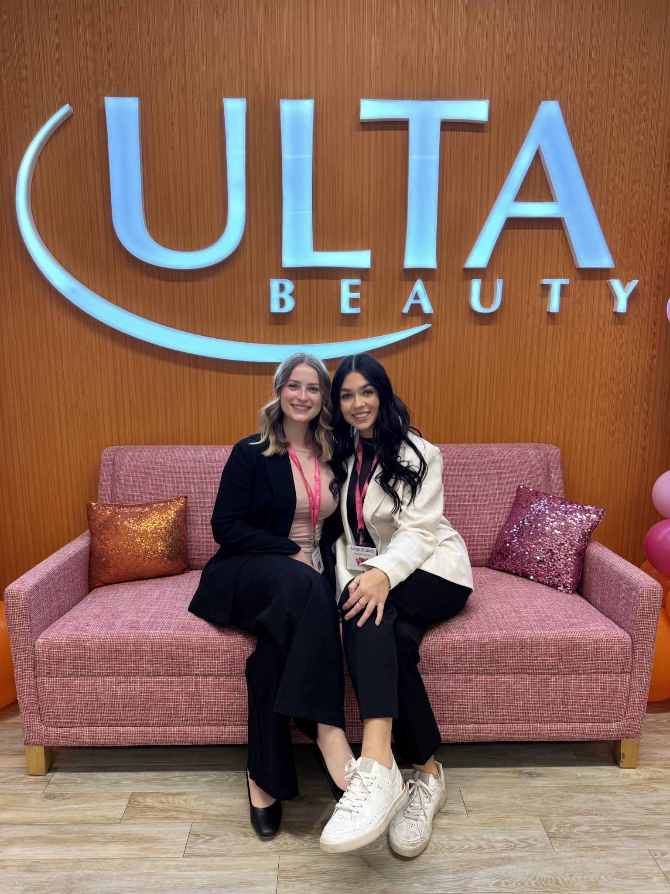
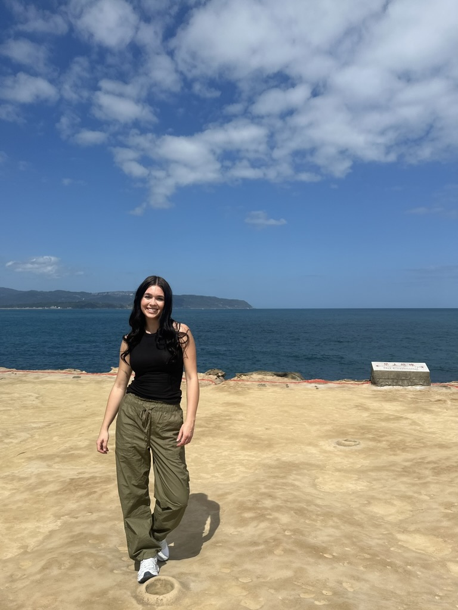
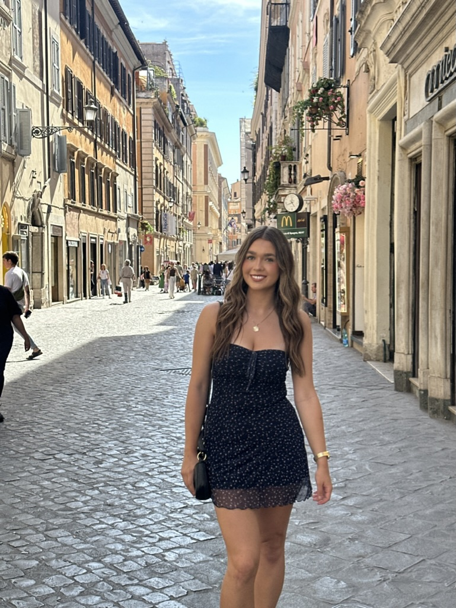
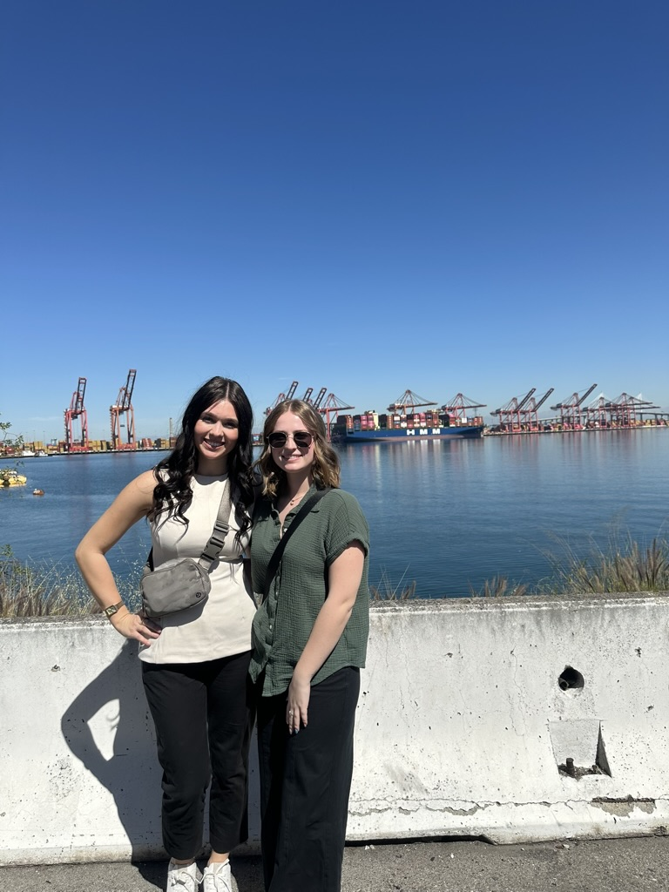

ABOUT ME
Curious, collaborative,
and always learning.
I'm a senior at Iowa State University studying Supply Chain Management and Marketing. I've always enjoyed understanding how things work, finding ways to improve them, and connecting with people along the way.
Through my internships, leadership roles, and international experiences, I've developed an interest in the intersection of business strategy, analytics, and relationships. I enjoy opportunities that challenge me to think differently, collaborate with others, and turn ideas into meaningful results.
Beyond the classroom
LEADERSHIP
Bringing people together.
As Vice President of Women Impacting Supply Chain Excellence (WISE), I enjoy building connections, supporting other students, and creating opportunities for personal and professional growth.
Being involved in WISE has strengthened my leadership, communication, and collaboration skills while allowing me to connect with people who share similar interests.

GLOBAL PERSPECTIVE
Learning beyond borders.
Studying abroad in Italy, Taiwan, and Vietnam has been one of the most rewarding parts of my college experience.
Exploring new cultures, meeting people from different backgrounds, and learning about international business have broadened my perspective and strengthened my adaptability and curiosity.


EXPERIENTIAL LEARNING
Seeing business in action.
I believe some of the most valuable lessons happen outside the classroom. Through internships, company visits, and hands-on projects, I've had opportunities to connect what I've learned in school to real-world business challenges.
Experiences like visiting the Port of Los Angeles have helped me better understand the complexity of global supply chains and reinforced my interest in improving how businesses operate.

A LITTLE MORE ABOUT ME
Always looking for what's next.
Outside of school and work, I love traveling, exploring new places, and meeting new people. I'm naturally curious and enjoy experiences that push me outside my comfort zone. Whether I'm navigating a new city or tackling a new challenge, I try to approach every opportunity with an open mind and a willingness to learn.
Explore my experience